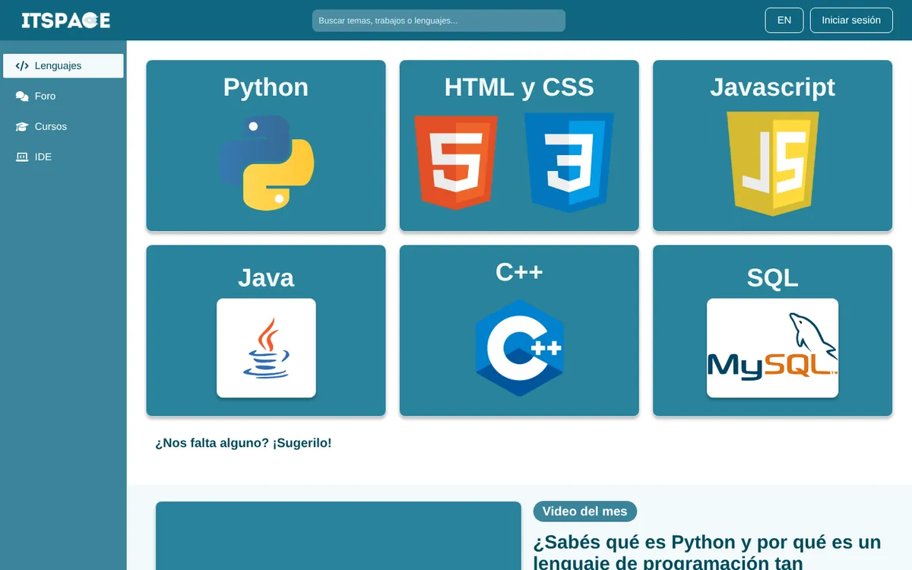
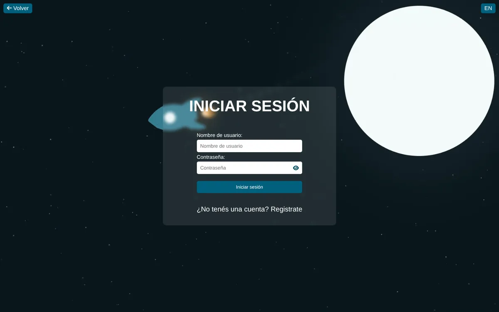
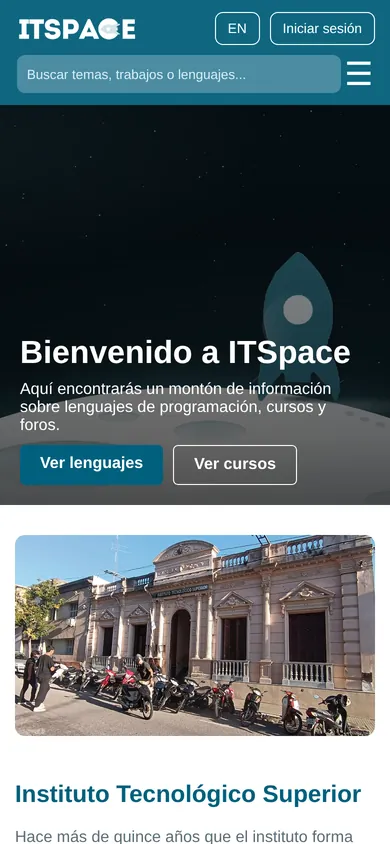
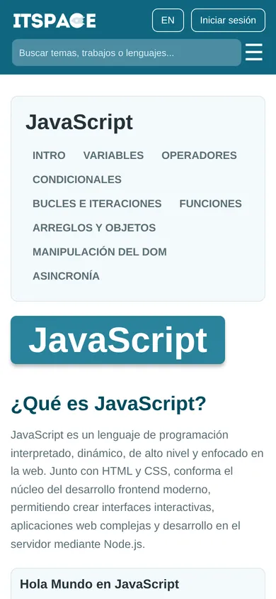
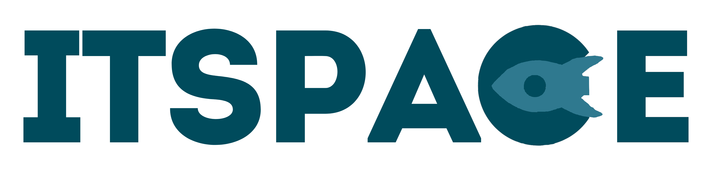

ITSpace
Ver el sitio- Contexto
- Proyecto de egreso 2° año · ITSP
- Rol
- Maquetación y desarrollo del sitio
- Stack
- HTML · CSS · JavaScript · PHP · MySQL · XAMPP · Figma
- Sitio web
- ITSpace
- Descripción
- Una plataforma pensada dentro del instituto: cada lenguaje con teoría, práctica y ejercicios, y cuentas para guardar por dónde vas. En camino: un foro para pedir y dar ayuda con el código y cursos validados por el ITSP.






C++HTML y CSSJavaJSPythonSQL

- Timeline
- Desde julio de 2026 · Entregado el 2/11/2026 · En desarrollo